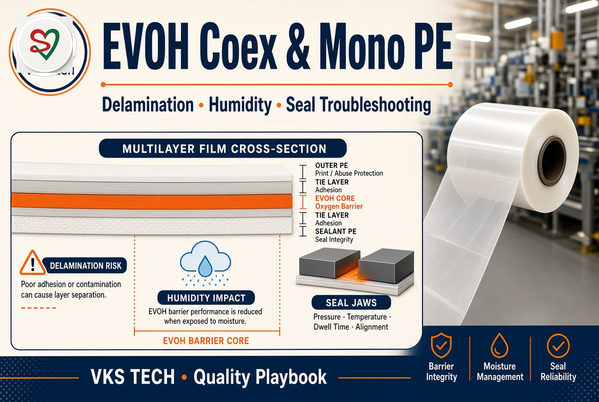
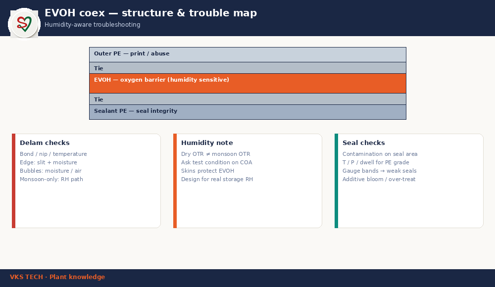

🧪 EVOH Coex & Mono PE — Delamination, Humidity & Seal Troubleshooting
📖 12-min read | Quality playbook | Barrier structures
EVOH gives excellent oxygen barrier when dry — performance falls as humidity rises. Mono PE is simpler and right for many packs, but it is not a drop-in oxygen barrier. This playbook is for QA and process teams who see delam, monsoon complaints, or weak seals.
- Dry OTR ≠ monsoon OTR — ask test condition on COA
- Skins protect EVOH from RH — structure integrity matters
- Delam has a map — bond, edge moisture, contamination
- Seal is PE grade + T/P/dwell — not only “more heat”

1. Typical coex idea (schematic)
Outer PE (print/abuse) → tie → EVOH core → tie → sealant PE. Exact layers vary by supplier — always read the structure drawing.
2. Delamination checks
- Bond / nip / temperature at lamination
- Edge: slit damage + moisture path
- Bubbles: trapped air / moisture
- Monsoon-only failures: RH path into EVOH
3. Humidity honesty
Do not sell or troubleshoot on dry OTR alone. Storage and distribution RH in India can move barrier numbers. Design and claims must match real logistics.
4. Seal checks
- Contamination on seal area
- Temperature / pressure / dwell for that PE grade
- Gauge bands → weak seal zones
- Additive bloom / over-treat side effects
🧪 EVOH कोएक्स और मोनो PE — डेलैमिनेशन, नमी और सील समस्या निवारण
📖 12 मिनट | क्वालिटी प्लेबुक | बैरियर संरचनाएँ
EVOH सूखी अवस्था में शानदार ऑक्सीजन बैरियर देता है — नमी बढ़ने पर प्रदर्शन गिरता है। मोनो PE सरल है और कई पैक के लिए सही, लेकिन ड्रॉप-इन ऑक्सीजन बैरियर नहीं। यह प्लेबुक QA और प्रोसेस टीमों के लिए है जिन्हें डेलैम, मानसून शिकायतें या कमज़ोर सील दिखती हैं।
- ड्राई OTR ≠ मानसून OTR — COA पर टेस्ट कंडीशन पूछें
- स्किन EVOH को RH से बचाते हैं — स्ट्रक्चर इंटेग्रिटी मायने रखती है
- डेलैम का नक्शा है — बॉन्ड, एज नमी, कंटैमिनेशन
- सील = PE ग्रेड + T/P/dwell — सिर्फ “और हीट” नहीं
1. Typical कोएक्स आइडिया (स्कीमैटिक)
आउटर PE (प्रिंट/एब्यूज़) → टाई → EVOH कोर → टाई → सीलेंट PE। सटीक लेयर सप्लायर के अनुसार बदलती हैं — हमेशा स्ट्रक्चर ड्रॉइंग पढ़ें।
2. डेलैमिनेशन चेक
- लेमिनेशन पर बॉन्ड / निप / तापमान
- एज: स्लिट डैमेज + नमी पथ
- बुलबुले: फँसी हवा / नमी
- सिर्फ मानसून फेल्योर: EVOH में RH पथ
3. नमी की ईमानदारी
सिर्फ ड्राई OTR पर बेचें या ट्रबलशूट न करें। भारत में स्टोरेज और डिस्ट्रीब्यूशन RH बैरियर नंबर हिला सकती है। डिज़ाइन और क्लेम असली लॉजिस्टिक्स से मैच करें।
4. सील चेक
- सील एरिया पर कंटैमिनेशन
- उस PE ग्रेड के लिए तापमान / प्रेशर / ड्वेल
- गेज बैंड → कमज़ोर सील ज़ोन
- एडिटिव ब्लूम / ओवर-ट्रीट साइड इफेक्ट